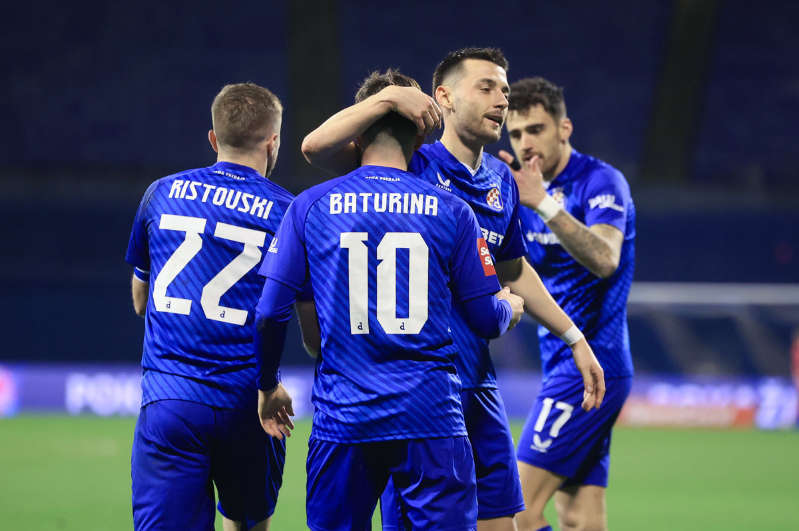
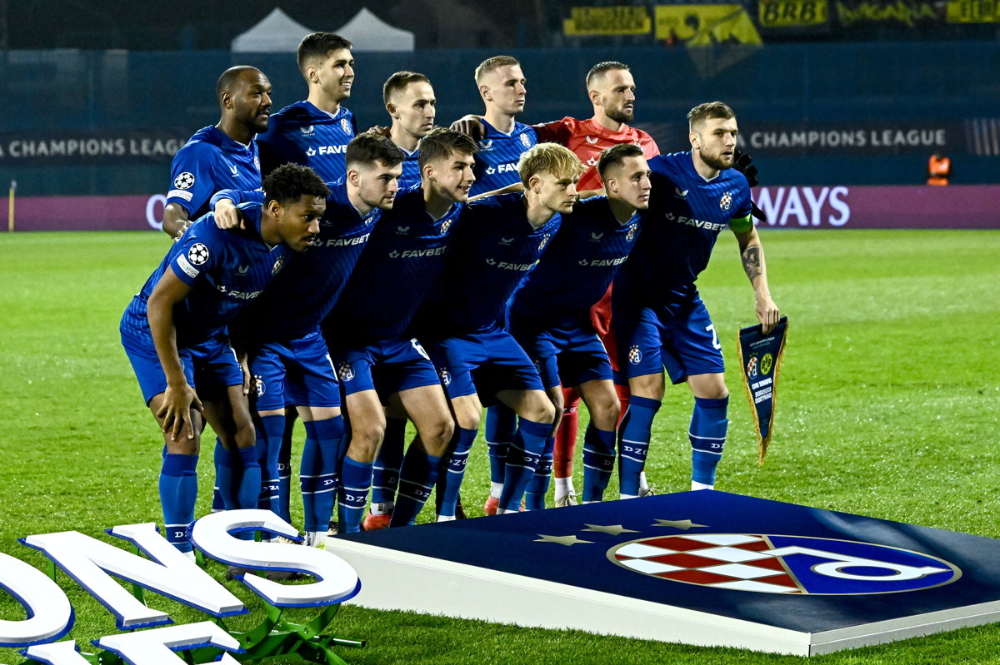
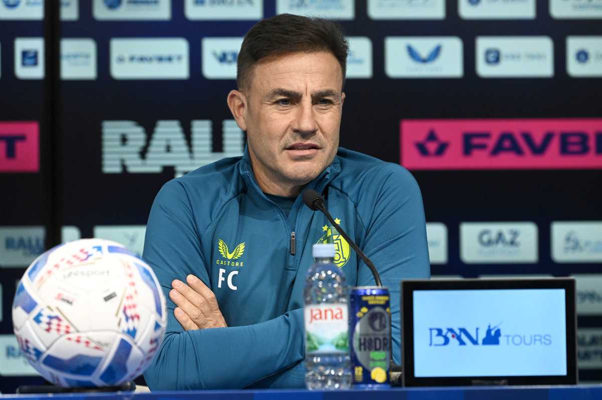
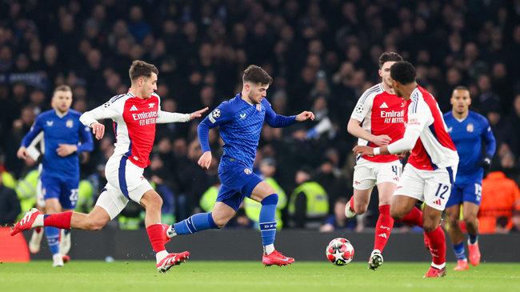
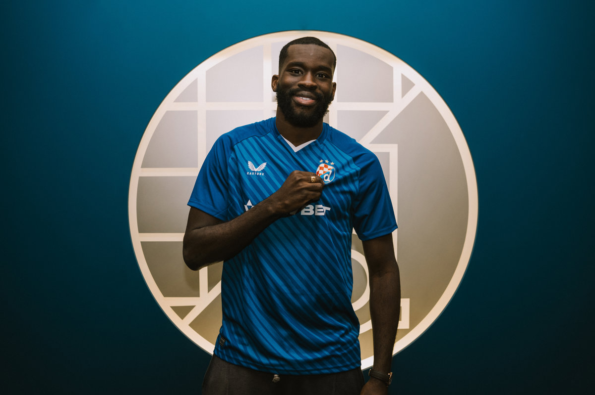
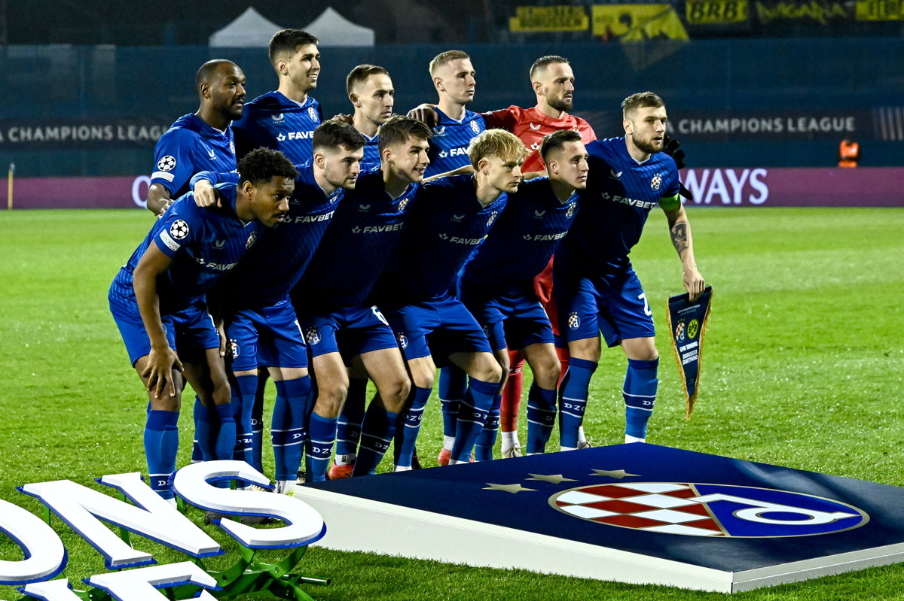
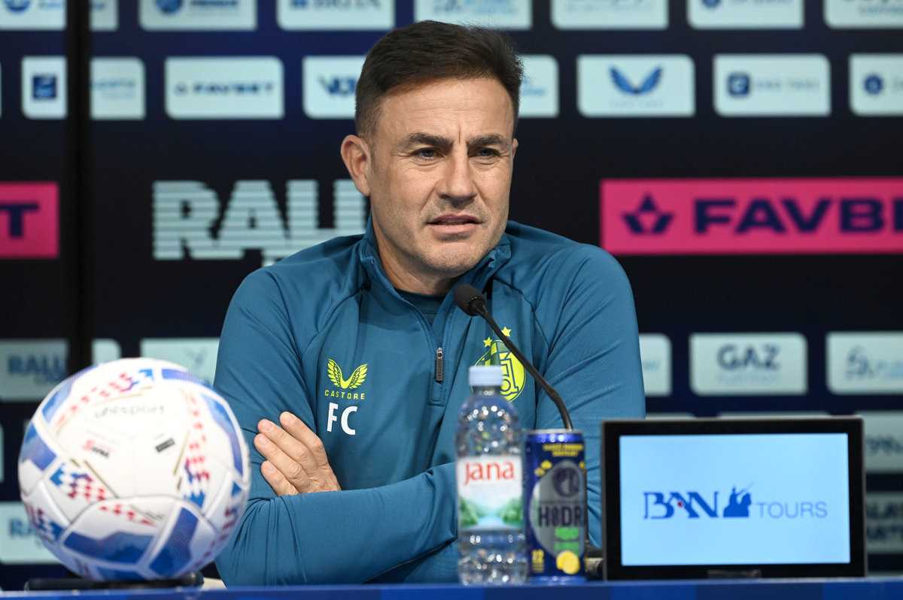
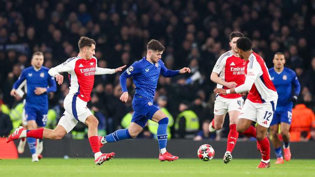
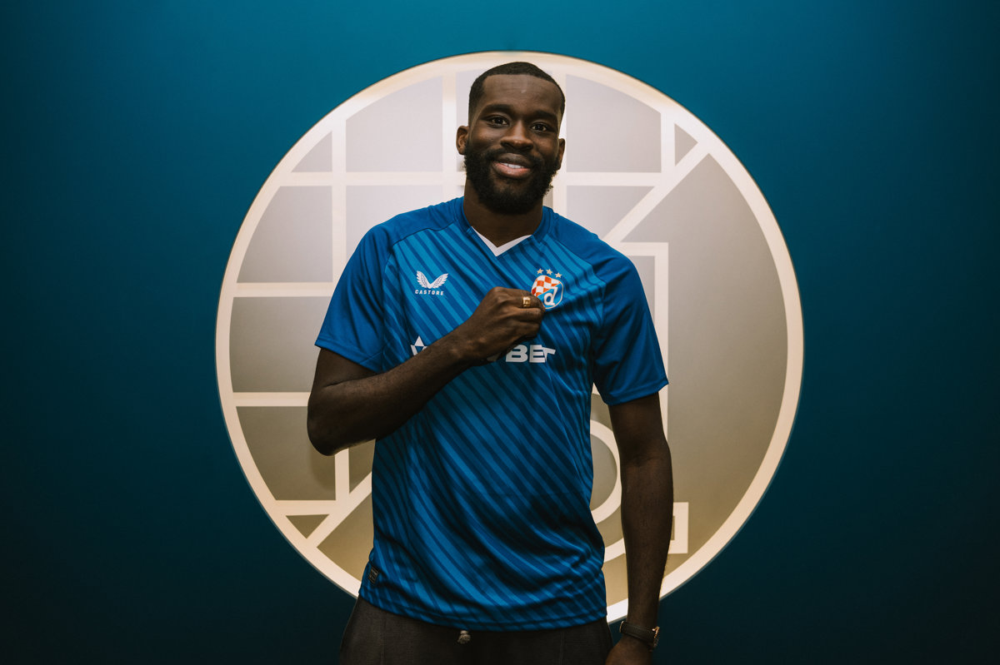

NOVOSTI





Pobjednička premijera trenera Cannavara u HNL-u
Nekoliko efektnih poteza za pljesak publike, i to na objema stranama terena, pobjednička premijera trenera Fabija Cannavara u HNL-u. Više ...

Dodatna prodaja ulaznica za utakmicu Dinamo - Milan
Obavještavamo vas o dodatnoj prodaji ulaznica za utakmicu 8. kola UEFA Lige prvaka između GNK Dinamo i AC Milan. Više ...

Trener Cannavaro: Najvažniji je naš pravi pristup, i zbog kluba i zbog navijača
Naglašeni entuzijazam i vidljiv elan uoči premijere pred zagrebačkom publikom. U takvom će okruženju novi Dinamov trener Fabio Cannavaro... Više ...

Bodovi ostali u Londonu, Dinamo u zadnjem kolu u borbu za prolaz
U ogledu predzadnjeg, 7. kola UEFA Lige prvaka Arsenal je svladao zagrebačku momčad s 3:0. Više ...

Wilfried Kanga novi igrač Dinama
Iskusni napadač Wilfried Kanga novi je igrač Dinama, a u maksimirskoj će momčadi... Više ...